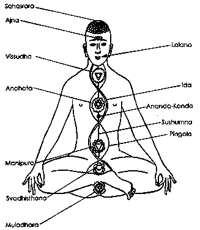

written by Ruth Trimble
When Rob told me my Kundalini had been awakened, I had absolutely no idea what he was talking about. The awakening of Kundalini is a spiritual awakening, a major step towards realization of the divine. It is, in fact, a great boon, a great blessing and a magical gift. According to Swami Prajananda, "The main purpose of its awakening in a seeker is to enable him to attain Godhood" (Muktananda, Kundalini 9). Just after my awakening that night, I certainly knew something divine had happened to me. This bliss was to become the beginning of a transformation process that was very dramatic for the two years which followed; it continues to this day in a much more subtle manner.
It is apparent now according to Lee Sannella, a psychiatrist who has written a seminal work on what he calls "a form of psychospiritual energy" ( 8) the Kundalini Shakti, that the phenomena of the process of psychospiritual transformation...are constant and universal, transcending personal and cultural differences" (23). I was participating in a universal human experience of transcendence which took over my life at this time. According to his research Kundalini is integral to the teachings of "Tibetan Buddhism, Chinese Taoism," some "American Indian tribes, and ...even of the Bushmen of Africa." It was "most carefully studied and conceptually elaborated" in Hindu India (8).
Although the word Kundalini may appear strange for many readers and the concept of it even incomprehensible to the Western mind, in fact it is closer to each person than his own heart. Kundalini is closer than the breath in the body for it is the breather and the breath. In its dormant form it is the very essence of all life. Kundalini is also a Goddess of immense power, often called Kundalini Shakti. It is She who is the manifest universe, and when She wakens, She will sweep one up in Her tremendous passion to reunite with Her Lord, Shiva--the unmanifest --in order to dance once again in his arms.
Fortunately, there is a familiar symbol of it in Western culture. The symbol for medicine and a common logo on ambulances is the caduceus, the rod with two snakes coiled around it in spirals. At the top are two wings. Images of Mercury or Hermes show him with this in his hand. That is the symbolic representation of Kundalini. The caduceus is a symbol of healing, health and transformation.
The caduceus' central rod represents the central column akin to the spine in the physical body called sushumna (a Sanskrit word with no equivalent word in English). No surgeon will find this sushumna as it is part of the subtle body. Irving states the "kundalini process occurs in what is sometimes called the etheric, or subtle (nonphysical) body...comprised of nerve fibers not visible to the naked eye"(10). The sushumna, our caduceus' rod, parallels the spinal column from the base of the body to the base of the skull. Just as the spinal column is a hollow structure that protects the spinal cord of the central nervous system, so the sushumna is a hollow structure that offers an ascending tube for the Kundalini, or light force and within it are three channels.
The sushumna is identified with the planet Mercury and the qualities of liquid mercury, quicksilver, and volatility perhaps because the Kundalini within the sushumna appears like liquid light and has characteristics of lightning. People who meditate, yogis, mystics and those who study the Oriental martial arts based upon Chi or Ki, are able to see this light. The great yoga masters were able to assist their chelas, disciples, with the ascent of the Kundalini because they could see where it was blocked or stuck, and send their own psychic power to aid in releasing it. Thus the importance of an enlightened master during this experience.
The caduceus' two snake-like tubes, which spiral three and a half times each around the central rod, meet and cross at the sushumna in their ascent. They represent two side channels of the flow of the awakened Kundalini energy, called ida and pingala (no English equivalent). The channel, ida, is identified with the left side, negatively charged, feminine side of the body, ending above the right nostril and has characteristics of coolness related to the moon; whereas, pingala, is identified with the right side, positively charged, masculine side and ends above the left nostril and has characteristics of heat related to the sun (Avalon 110-112).
The two channels are also seen as connected to the sympathetic and parasympathetic nervous systems which enervate the organs of the body (Beattie, "Alchemy" 27-29), and they also have a connection to the breath (Muktananda, Kundalini 28). When the Kundalini rises through only one of these channels and not through both, madness can easily result. The story of Gopi Krishna in his autobiography "Living with Kundalini" is grim testimony to this painful experience. His awakening Kundalini traveled only through the pingala, the fire channel, in its ascent, causing him to suffer interminably. It was only when,. after enormous suffering, he was able to open the ida channel, the cooling side, that he was restored physically and mentally.
According to Muktananda, the Kundalini has two aspects: one manifests the world as we know it, the outer form or physical and is pervasive. In China they call this outer cosmic energy, Chi, in Japan Ki, in India it is Prana, and the nearest to it in the West is Holy Spirit (Muktandanda, Kundalini 13). We have a limited form of Kundalini energy running through our bodies the moment we are conceived or we should not be able to move our bodies or live - it is indeed the "life force." It is this outer energy we see in the energetic meridians that are used in acupuncture. It is this energy that pervades and enervates the world as we see it.
The hidden, or inner form of Kundalini is usually asleep in a small "bulb" of energy that is stored at the base of the spine. According to Bonnie Greenwell, (Energies of Transformation): ".. after Kundalini enters the fetus and activates the pranic system the residual energy coils 3 1/2 times at the base of the spine, and goes into a dormant state. The mind becomes engaged in the process of living, and we identify with our bodies, our genetic heritage and our mental, sensate and emotional processes, separating from any awareness of the Self, or the Soul or the source of our existence, however one wishes to identify it. "(22)
So when the inner Kundalini is awake it turns us inward to our soul and to our source - the Divine. It offers an opportunity to uncover who we are, where we come from and where our home is. It is "the beginning of the spiritual journey" that enables us to "experience the inner, spiritual world" (Muktandanda, Kundalini 8). As Gopi Krishna, the foremost writer on the subject, states: "There is a mechanism in the human body--psycho physiological mechanism, known as kundalini, which is the source from which inspiration, revelation and psychic gifts originate. Every person who is psychic, a genius, or an enlightened sage, has an awakened kundalini to a greater or lesser extent" (Irving 179).
How this awakening takes place is mysterious and much sought after by yogis. According to Muktananda, the most frequent place of awakening is the base or root of the spine (18). As the inner Kundalini is awakened, it uncoils and ascends like a snake, so that is why often it is called "serpent power." This bulb of Kundalini energy can be awakened through intense devotion to God, repetition of mantra and various yogic practices and, in my case, shaktipat, the Guru's touch (Muktananda, Kundalini 18).
So as I sat in that meditation center a happy confluence of circumstances occurred to give me this awakening. I was karmically ready, and I had reached a state of "inner maturation" by choosing a moral high road that suppressed the wild spirit within, so I had to release Mercury, "the barbaric spirit" (Mindell, Working 59). I was chanting a mantra, a classic device for bringing the two sides of the brain into alignment. I was in a meditation center where Muktananda's teachings were put into practice and his spirit was invoked. It was July 13, 1979, always my lucky number.
According to Swami Vishnu Tirtha in Devatma Shakti (Kundalini):
Divine Power, "The astral force [Kundalini] can also be roused by the magnetic influence of other persons. Such great personalities have their prana and mind on a higher potentiality and when approached they tend to raise the prana of others from a lower potentiality to a higher one. The process may be compared with the flow of an electric current... [that] depends wholly on the will of the master mind. "(77).
I was ready for initiation by a realized being into the realms of my inner and higher self. Muktananda explains initiation thus:
"The tradition of initiation exists in every path and in every sect. However, the true initiation is Shaktipat, the inner awakening by which the disciple can have a super conscious vision of the Absolute, and through which, in time, he comes to experience his identity with God. "(19)
Swami Vishnu Tirtha says that Shaktipat is "the process of spiritualizing a man with the charge of psychic force....not to be confused with mesmerism or hypnotism" because it is "everlasting and elevating" (77). I was fortunate to be the recipient of shaktipat by Swami Muktananda, a "Satguru" from India who toured the United States and the world in the 70's. This set me on a path of Siddha Yoga, the yoga that "can be acquired only through the favor of a perfect master (Siddha Guru) without any effort on the part of the initiated" (Tirtha 79).
No more would I be creating karma, and spinning on the wheel of constant incarnations. Swami Vishnu Tirtha explains the awakening Kundalini as the "dynamic life-principle" that is the true evolution of man. Until awakening, man is in a state of involution, rather than evolution. He views involution as a static process of reincarnating again and again where there is gradual psychological development. The true meaning of evolution for him is when man is transmuted into his full God self(26).
"It is the human body wherein the dynamic life-principle after the involutionary process has been worked out, rests asleep as residual power known to the yogins as kundalini and possesses full potentiality of evolving or uncoiling the folds of involution step by step and finally merging into the Absolute. When this evolutionary turn is taken, the coiled serpent power is said to have awakened... Then before long even within the span of this very life complete emancipation is possible"(26).
When the Kundalini awakens it is a dramatic transformational force, a white, quicksilver, fluid light that flows through the nadis, nerve channels of the body, rising up from the base of the spine through the sushumna and spinning chakras or energy centers as it rises. Those who are very sensitive can actually feel and even see the light force rising in the body. At times the experience is blissful and erotic, at other times it can bring up latent anger or rage. The chakras are intersections, like relay stations, which control the nerves in their respective sections of the body and each have psychologically distinctive characteristics . Major chakras control the nerves related to the five different sections of the spine: (1) coccyx - muladhara; (2) sacrum svadhistana, (3) lumbar- manipura, (4) dorsal - anahata and (5) cervical vishuddha (Avalon 104). Above the throat chakra, vishuddha, is the ajna chakra at the third eye, or point between the eyebrows, and the sahasrara at the crown of the head.
There are seven clearly defined chakras in most diagrams of the chakra system although there are other minor ones and some outside of the body. Each lower chakra forms a portal to energies of the next highest one. In the sacred literature, there are many varying features such as gods, goddesses, symbols, syllables, mantras, colors and characteristics of each chakra related to a level of spiritual attainment. Barbara Ann Brennan in Hands of Light includes clear visual diagrams of where the chakras are located, what they look like, their colors, and a good description of how they operate psychologically.

As the mercurial fluid of light spins these chakra wheels in the body it cleans out the old impressions (samskaras) of past lives, the Kundalini ascends the sushumna, creating varying experiences of past and present life traumas.
"Within the sushumna is a subtle nadi called chitrini which is the channel for the movement of the Kundalini.... Whatever thoughts one has come from this central nadi, and all one's karmas and impressions from many lives are lodged here". (Muktananda, Kundalini 29).
As the shining Kundalini moves up the central channel it cleanses out "blocks" in the emotional, mental, and subtle body. How this works is explained by Barbara Brennan: "As a human being matures and the chakras develop, each represents the psychological patterns evolving in the individual's life. Most of us react to unpleasant experiences by blocking our feelings and stopping a great deal of our natural energy flow. This affects the development and maturation of the chakras, resulting in inhibition of a fully balanced psychological function....Eventually, a physical problem will very likely result....The chakras become "blocked," or clogged with stagnated energy, spin irregularly, or backwards (counterclockwise) and even, in the case of disease, become severely distorted or torn"(71).
Thus this cleansing, divine light snakes its way up through the subtle nerve threads of the body and expels the darkness of the past, unknotting any traumas that are caught in the memory of the body, so that a person ceases to be limited by past life, present life traumas or old thought forms. The Kundalini expels the ghouls and fears of the subconscious, as past life agonies and griefs appear briefly, taking a last turn on the stage of opposites before the Kundalini transmutes them into light. It is an opportunity to become new or reborn. The gift the genie gave to the student in Grimm's Fairy Tale of changing iron into silver is this ability to change the sorrow and evil of past existences into light and transcendence. It is the philosopher's stone, the alchemical process in man.
It would appear to be an event for celebration. However, the nature of the cleansing process creates strange behavior that might make the person weep and laugh within minutes, might make him leap over a tall fence, go spinning wildly to unknown music, or leave his comfortable life for the forest; the newly awakened person can appear insane to others. Where the Kundalini energy encounters a "block" (a resistance to flow) strange body movements or emotions called kriyas occur . It is these kriyas which cause most of the problems of the awakening.
The awakened soul needs a guide who himself has traveled the same road and emerged out of it to the state of advancement. This is no path for the unaided. The progress of the ascent can be self-modulated to some extent, but when the enthusiasm for transcendence is intense, sometimes the cleansing experiences come too fast. This then becomes a "spiritual emergency," a crisis of overload: too much, too fast. The logical mind and other parts of the personality cannot process the experiences, and falls into a state of confusion. The process can be gravely misunderstood both by the person experiencing it and caretakers.
Other problems can be caused when the person raises Kundalini accidentally, such as in childbirth. The Kundalini may rise through the wrong channels. It may rise not through the sushumna, but through either the pingala or the ida channels creating imbalances in the person experiencing these. An account of such an event can be found in Gopi Krishna's biography, "Living with Kundalini." As he so clearly recounts, there is no one to ask for help. No one can understand the incredible pain and confusion which can take place as the constructs of the ego, the defenses and conditionings are burned away. For no person is the ascent easy since all the latent fears, agonies, hatreds and such of all ones' past lives are caught in our tissues and these will be eased out by this flowing light (Kundalini) in order that one become "new"~ literally reborn. 'Swami Muktananda gives very dramatic evidence of his awakening process in "Play of Consciousness" and many other saints and beings have reported their process.
The Kundalini is all powerful, unstoppable, erotic, terrifying yet most beautiful. Her love is "tough" love, without sentimentality or mercy. She is our fierce mother Goddess. I cannot say I love Her for that implies a duality, that I am separate from Her. The Goddess IS me so closely that I do not even feel her as an entity. She is the movement of my fingers on the keys of my computer and the thought that comes into my mind. I have no need to seek her. She is ever present. She loves truth and only responds to it. She melts my ego into a vapor which can be agony, yet if I surrender to Her, She always brings me great peace. She dissolves the world. She is my creativity. She is the beauty in my eyes. She is the breath that breathes me. She is the presence of the cosmic One within me. And She cannot be defined in words. She is an experience only.
Source: http://www.spiritweb.org/Spirit/kundalini-awakening-trimble.html